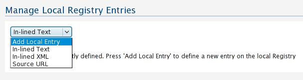
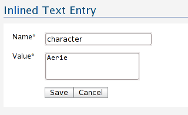
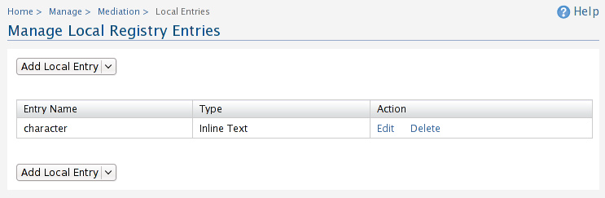
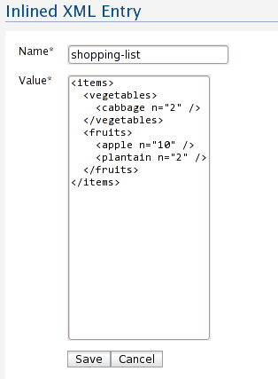
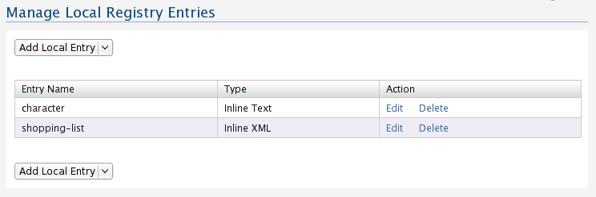
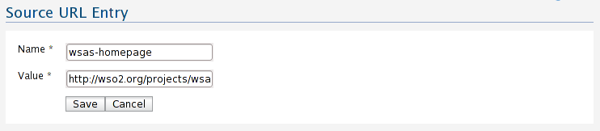
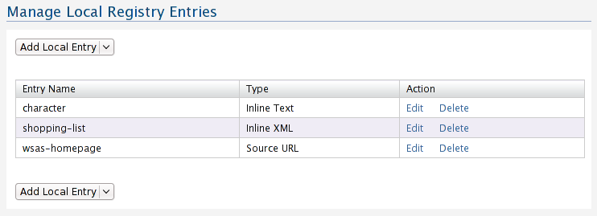

Manage Local Registry Entries
The local registry acts as a memory registry where you can store text
strings, XML strings, and URLs. These entries can be retrieved from a
mediator.
- In the navigator, under Manage/Mediation, clickLocal Entries.The Manage Local Registry
Entries page appears.

Figure 1: Local registry option types
Field descriptions
Adding an In-lined Text Entry
- In the Add Local Entry list, click In-lined
Text. The In-line Text Entry page
appears.

Figure 2: Adding an In-lined text
- Enter the required details, and click Save.
The Manage Local Registry Entries page will
display the added entry.

Figure 3: Listing all local entries, note that the in-lined text entry we
just created is listed.
Adding an In-lined XML Entry
- In the Add Local Entry list,
click In-lined XML The In-line XML Entry
page appears.

Figure 4: Adding an In-lined XML entry
- Enter the required details, and click Save.
TheManage Local Registry Entries page will
display the added entry.

Figure 5: Listing all local entries, note that the in-lined XML entry we
just added is listed
Adding a Source URL Entry
- In the Add Local Entry list, click Source
URL The Source URL Entry page
appears.

Figure 6: Adding a Source URL entry
- Enter the required details, and click Save.
The Manage Local Registry Entries page will
display the added entry.

Figure 7: Listing all local entries, note that the Source URL entry we
just added is listed
| Manage Local Registry Entries |
| In-lined Text |
Stores a plain text entry |
| In-lined XML |
Stores an XML string |
| Source URL |
Stores a URL |
For more information please refer to the WSO2 library